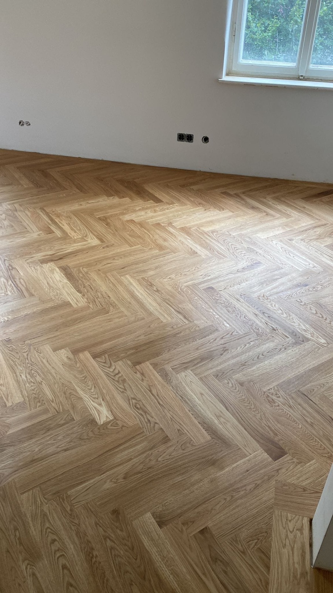

Parkett
Natürliches Holz bringt Wärme in den Raum. Wir besprechen geeignete Parkettvarianten, Verlegemuster und die Möglichkeiten für Ihren vorhandenen Untergrund.
MEL MALER · PARKETT & BODENARBEITEN
Ein Boden soll gut aussehen und zu Ihrem Alltag passen. Wir unterstützen Sie bei Parkett, Laminat und Vinyl – mit einer abgestimmten Auswahl und sorgfältiger Verlegung.
Parkett & Bodenarbeiten anfragen ↗
WAS WIR FÜR SIE TUN
Wir stimmen die Arbeiten auf Ihre Räume, Ihre Wünsche und die Gegebenheiten vor Ort ab.
Natürliches Holz bringt Wärme in den Raum. Wir besprechen geeignete Parkettvarianten, Verlegemuster und die Möglichkeiten für Ihren vorhandenen Untergrund.
Unterschiedliche Räume stellen unterschiedliche Ansprüche. Gemeinsam klären wir, welches Material zu Nutzung, Optik und Pflegeaufwand passt.
Ein stimmiges Ergebnis zeigt sich auch an den Rändern. Sockelleisten, Türübergänge und Anschlüsse werden bei der Planung berücksichtigt.
Gerade, diagonal oder im Fischgrätmuster: Das Verlegemuster prägt den ganzen Raum. Wir zeigen Ihnen die Möglichkeiten.
Ein ebener, trockener Untergrund ist entscheidend für einen langlebigen Boden. Wir prüfen ihn vor der Verlegung.
Saubere Abschlüsse an Wänden, Türen und Übergängen machen den Boden erst richtig fertig.
INTERAKTIVBODEN-RECHNER
Wechseln Sie zwischen den Verlegearten und sehen Sie, wie sich Optik und Materialbedarf verändern.
Richtwerte. Der tatsächliche Verschnitt hängt von Raumform, Dielenformat und Verlegeart ab. Das Fischgrätmuster ist in der Vorschau vereinfacht dargestellt. Sockelleisten inkl. 5 % Zugabe, Türen mit je 90 cm abgezogen.
Ergebnis als Anfrage übernehmen ↗AUS UNSEREN PROJEKTEN
Parkett- und Bodenarbeiten von MEL in Wohnräumen und Dachgeschossen.
SO LÄUFT ES AB
Parkett, Laminat oder Vinyl – und die passende Verlegeart für Ihren Raum.
Ebenheit und Feuchtigkeit prüfen, bei Bedarf ausgleichen.
Sorgfältig verlegt – gerade, diagonal oder im Muster.
Sockelleisten, Übergangsprofile und saubere Abschlüsse.
GUT VORBEREITET
Wichtig sind die ungefähre Fläche, der vorhandene Boden und die Nutzung der Räume. Erwähnen Sie auch eine Fußbodenheizung sowie gewünschte Materialien oder Muster.
Den genauen Umfang und die Kosten klären wir nach der Besprechung Ihres Vorhabens. Sie müssen zum ersten Kontakt noch nicht alle Details kennen.
Vorhaben besprechen ↗HÄUFIGE FRAGEN
Nicht immer. Aufbauhöhe, Zustand, Ebenheit und Material bestimmen, ob der vorhandene Boden bleiben kann oder entfernt werden muss.
Die Eignung hängt vom konkreten Produkt und Aufbau ab. Wir berücksichtigen die Herstellerangaben und die Voraussetzungen Ihres Raums bei der Auswahl.
Ob eine Renovierung möglich und sinnvoll ist, hängt unter anderem vom Aufbau und Zustand des Parketts ab. Senden Sie uns gern erste Bilder für eine Besprechung.
Als Faustregel etwa 5–7 % bei gerader Verlegung und 10–15 % bei diagonaler Verlegung oder Fischgrät. Bei verwinkelten Räumen kann es mehr sein.
Das hängt vom Zustand und vom neuen Belag ab. Wir prüfen vor Ort, ob der vorhandene Untergrund geeignet ist.
DER NÄCHSTE SCHRITT